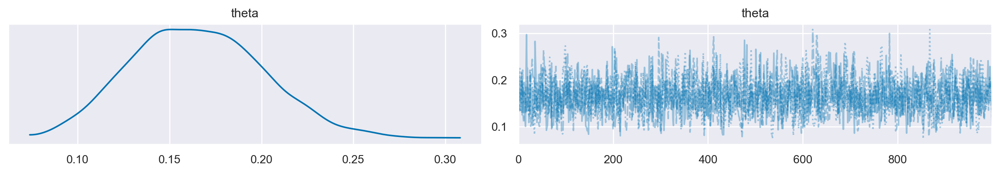

Metodi di sintesi della distribuzione a posteriori#
L’obiettivo di questo capitolo è analizzare in dettaglio il flusso di lavoro all’interno del contesto dell’inferenza bayesiana, una volta che sia stata ottenuta la stima della distribuzione a posteriori mediante l’utilizzo della tecnica MCMC.
Preparazione del Notebook#
import numpy as np
import pandas as pd
import matplotlib.pyplot as plt
import seaborn as sns
import pymc as pm
import pymc.sampling_jax
import arviz as az
import scipy.stats as stats
import warnings
warnings.filterwarnings("ignore", category=UserWarning)
warnings.filterwarnings("ignore", category=FutureWarning)
warnings.filterwarnings("ignore", category=Warning)
%config InlineBackend.figure_format = 'retina'
RANDOM_SEED = 42
rng = np.random.default_rng(RANDOM_SEED)
az.style.use("arviz-darkgrid")
sns.set_theme(palette="colorblind")
Sintesi della Distribuzione a Posteriori#
Uno dei fattori principali che ha contribuito alla crescente popolarità dei metodi bayesiani nelle scienze sociali è stata la (ri)scoperta di algoritmi numerici capaci di stimare le distribuzioni a posteriori dei parametri del modello a partire dai dati osservati. Prima di tali sviluppi, era praticamente impossibile ottenere misure riassuntive delle distribuzioni a posteriori, specialmente per modelli complessi con un elevato numero di parametri.
Gli algoritmi numerici che esamineremo in questo capitolo fanno uso dell’integrazione Monte Carlo attraverso catene di Markov, meglio conosciuta come campionamento Markov chain Monte Carlo (MCMC). Questa tecnica ha rivoluzionato la capacità di effettuare inferenze bayesiane, rendendo più accessibile e gestibile l’analisi di modelli complessi.
Campionamento con PyMC#
A titolo di esempio, useremo ancora una volta il set di dati “moma_sample”, che è stato analizzato nel capitolo precedente. Iniziamo replicando il processo di campionamento PyMC descritto in precedenza.
y = 14
ntrials = 100
alpha_prior = 4
beta_prior = 6
with pm.Model() as bb_model:
theta = pm.Beta("theta", alpha=alpha_prior, beta=beta_prior)
obs = pm.Binomial("obs", p=theta, n=ntrials, observed=y)
with bb_model:
idata = pm.sampling_jax.sample_numpyro_nuts()
Show code cell output
Compiling...
Compilation time = 0:00:01.585032
Sampling...
Sampling time = 0:00:02.730905
Transforming variables...
Transformation time = 0:00:00.089632
La figura seguente rappresenta la distribuzione a posteriori di \(\theta\) ottenuta mediante il metodo MCMC e la traccia delle catene di Markov.
az.plot_trace(idata, combined=True)
plt.show()

Estrazione degli attributi da InferenceData#
Ora che abbiamo ottenuto la distribuzione a posteriori, possiamo effettuare varie operazioni con essa:
Stima puntuale
Intervalli di credibilità
Test di ipotesi
Predizione
Stima puntuale#
Procediamo all’esame dell’oggetto idata.
idata
-
<xarray.Dataset> Dimensions: (chain: 4, draw: 1000) Coordinates: * chain (chain) int64 0 1 2 3 * draw (draw) int64 0 1 2 3 4 5 6 7 8 ... 992 993 994 995 996 997 998 999 Data variables: theta (chain, draw) float64 0.1601 0.161 0.1657 ... 0.1743 0.1409 0.1297 Attributes: created_at: 2024-02-06T12:19:15.886085 arviz_version: 0.17.0 -
<xarray.Dataset> Dimensions: (chain: 4, draw: 1000) Coordinates: * chain (chain) int64 0 1 2 3 * draw (draw) int64 0 1 2 3 4 5 6 ... 993 994 995 996 997 998 999 Data variables: acceptance_rate (chain, draw) float64 0.9896 0.952 0.9653 ... 0.9317 0.9481 step_size (chain, draw) float64 0.9444 0.9444 ... 0.8761 0.8761 diverging (chain, draw) bool False False False ... False False False energy (chain, draw) float64 4.938 4.791 4.707 ... 5.006 4.997 n_steps (chain, draw) int64 3 3 3 3 1 3 3 3 3 ... 3 3 7 3 3 1 1 3 1 tree_depth (chain, draw) int64 2 2 2 2 1 2 2 2 2 ... 2 2 3 2 2 1 1 2 1 lp (chain, draw) float64 4.477 4.475 4.473 ... 4.697 4.996 Attributes: created_at: 2024-02-06T12:19:15.889875 arviz_version: 0.17.0 -
<xarray.Dataset> Dimensions: (obs_dim_0: 1) Coordinates: * obs_dim_0 (obs_dim_0) int64 0 Data variables: obs (obs_dim_0) int64 14 Attributes: created_at: 2024-02-06T12:19:15.892045 arviz_version: 0.17.0 inference_library: numpyro inference_library_version: 0.13.2 sampling_time: 2.730905
I vari attributi dell’oggetto InferenceData possono essere estratti come si farebbe con un dict, in cui ciascuna coppia è composta da una chiave e un valore, separati dal simbolo dei due punti. In questa situazione, le chiavi sono i nomi delle variabili, mentre i valori sono rappresentati da array di Numpy. Per esempio, possiamo recuperare la traccia di campionamento dalla variabile latente theta nel modo seguente.
idata.posterior["theta"]
<xarray.DataArray 'theta' (chain: 4, draw: 1000)>
array([[0.16005157, 0.16095225, 0.16566439, ..., 0.18232186, 0.17496635,
0.1025975 ],
[0.19207817, 0.18870845, 0.13716893, ..., 0.17363969, 0.14466252,
0.13494026],
[0.19113038, 0.22089034, 0.13047867, ..., 0.17937191, 0.17414176,
0.11910835],
[0.15288944, 0.19206051, 0.20482598, ..., 0.17434959, 0.14089201,
0.12969232]])
Coordinates:
* chain (chain) int64 0 1 2 3
* draw (draw) int64 0 1 2 3 4 5 6 7 8 ... 992 993 994 995 996 997 998 999Si noti che l’oggetto ritornato è un array di dimensioni 4 \(\times\) 1000 (sul mio computer):
idata.posterior["theta"].shape
(4, 1000)
Per visualizzare il primi 10 valori della prima catena, ad esempio, usiamo:
idata.posterior["theta"][0, 1:10]
<xarray.DataArray 'theta' (draw: 9)>
array([0.16095225, 0.16566439, 0.15929274, 0.15588057, 0.2028812 ,
0.15780524, 0.20297185, 0.12491408, 0.1310774 ])
Coordinates:
chain int64 0
* draw (draw) int64 1 2 3 4 5 6 7 8 9Per combinare catene e iterazioni, utilizziamo la funzione arviz.extract().
post = az.extract(idata)
post
<xarray.Dataset>
Dimensions: (sample: 4000)
Coordinates:
* sample (sample) object MultiIndex
* chain (sample) int64 0 0 0 0 0 0 0 0 0 0 0 0 ... 3 3 3 3 3 3 3 3 3 3 3 3
* draw (sample) int64 0 1 2 3 4 5 6 7 ... 992 993 994 995 996 997 998 999
Data variables:
theta (sample) float64 0.1601 0.161 0.1657 ... 0.1743 0.1409 0.1297
Attributes:
created_at: 2024-02-06T12:19:15.886085
arviz_version: 0.17.0La funzione extract ritorna un oggetto di classe xarray.DataArray il quale può essere trattato come un array NumPy.
post["theta"]
<xarray.DataArray 'theta' (sample: 4000)>
array([0.16005157, 0.16095225, 0.16566439, ..., 0.17434959, 0.14089201,
0.12969232])
Coordinates:
* sample (sample) object MultiIndex
* chain (sample) int64 0 0 0 0 0 0 0 0 0 0 0 0 ... 3 3 3 3 3 3 3 3 3 3 3 3
* draw (sample) int64 0 1 2 3 4 5 6 7 ... 992 993 994 995 996 997 998 999Si noti che post["theta"] contiene il numero totale (4000) dei campioni a posteriori della distribuzione di \(\theta\) escluso il burn-in:
post["theta"].shape
(4000,)
Di conseguenza, possiamo calcolare su di esso tutte le misure statistiche descrittive che si possono ottenere da un vettore di dati. Per esempio, possiamo calcolare la media a posteriori.
post.mean()
<xarray.Dataset>
Dimensions: ()
Data variables:
theta float64 0.1653post["theta"].mean()
<xarray.DataArray 'theta' ()> array(0.16530121)
Possiamo calcolare la mediana a posteriori di \(\theta\).
post.median()
<xarray.Dataset>
Dimensions: ()
Data variables:
theta float64 0.1639Oppure la deviazione standard della stima a posteriori di \(\theta\).
np.std(post["theta"])
<xarray.DataArray 'theta' ()> array(0.03654217)
Intervallo di credibilità#
L’inferenza bayesiana tramite l’intervallo di credibilità riguarda invece la stima dell’intervallo che contiene il parametro \(\theta\) ad un dato livello di probabilità soggettiva.
Usando idata, possiamo ottenere un sommario della distribuzione a posteriori con il metodo az.summary().
az.summary(idata, hdi_prob=0.94, round_to=3)
| mean | sd | hdi_3% | hdi_97% | mcse_mean | mcse_sd | ess_bulk | ess_tail | r_hat | |
|---|---|---|---|---|---|---|---|---|---|
| theta | 0.165 | 0.037 | 0.099 | 0.233 | 0.001 | 0.001 | 1351.301 | 1714.006 | 1.003 |
Si ottiene così l’intervallo di credibilità a più alta densità a posteriori (HPD) al 94%. Questo intervallo ci informa sul fatto che, a posteriori, possiamo essere certi al 94%, che il vero valore del parametro \(\theta\) sia contenuto nell’intervallo [0.103, 0.23].
Dato che, nel caso presente, conosciamo la soluziona analitica, possiamo verificare il risultato precedente calcolando i quantili della distribuzione a posteriori Beta(18, 92) di ordine 0.03 e 0.97.
ll = stats.beta.ppf(0.03, 18, 92)
ul = stats.beta.ppf(0.97, 18, 92)
list([ll, ul])
[0.10303527075398666, 0.23457657606771784]
Verifica di ipotesi bayesiana#
Un secondo tipo di inferenza bayesiana riguarda problemi in cui siamo interessati a valutare la plausibilità che il parametro \(\theta\) assuma valori contenuti in un dato intervallo di valori. Per esempio, ci potrebbe interessare l’ipotesi \(\theta > 0.5\). In questo caso, possiamo calcolare la probabilità a posteriori che \(\theta\) cada nell’intervallo di interesse, integrando la distribuzione a posteriori Beta su tale intervallo.
Nel caso dell’esempio degli artisti della Generazione X, supponiamo di essere interessati alle due seguenti ipotesi:
La nostra domanda è la seguente: Date le nostre credenze iniziali e i dati disponibili, quale importanza relativa possiamo attribuire a queste due ipotesi?
Per affrontare questa questione, iniziamo a calcolare la probabilità \(P(\theta < 0.2)\).
print(np.mean(post["theta"] < 0.2))
<xarray.DataArray 'theta' ()>
array(0.83125)
Passiamo ora a calcolare gli odds a posteriori:
post_odds = (np.mean(post["theta"] < 0.2)) / (1 - np.mean(post["theta"] < 0.2))
print(post_odds)
<xarray.DataArray 'theta' ()>
array(4.92592593)
Ciò implica che la probabilità che \(\pi\) sia inferiore al 20% è circa 6 volte superiore rispetto alla probabilità che sia al di sopra del 20%.
Questo risultato si basa solo sulle informazioni relative alla distribuzione a posteriori. Prima di avere osservato i dati del campione, avevamo una distribuzione a priori \(\operatorname{Beta}(6, 4)\), e in quel contesto avevamo una probabilità del 9% che \(H_a\) fosse vera e una probabilità del 91% che fosse falsa.
threshold = 0.2
prior_prob = stats.beta.cdf(threshold, a=alpha_prior, b=beta_prior)
prior_odds = prior_prob / (1 - prior_prob)
print(prior_odds)
0.09366320688790145
Ora possiamo combinare le informazioni degli odds a posteriori e degli odds a priori in una quantità chiamata Bayes Factor, che è semplicemente il rapporto tra le due:
BF = post_odds / prior_odds
print(BF)
<xarray.DataArray 'theta' ()>
array(52.5918991)
In conclusione, dopo aver appreso informazioni riguardo a 14 artisti appartenenti alla generazione X, le probabilità posteriori della nostra ipotesi \(H_a: \; \pi < 0.2\) sono circa 60 volte superiori rispetto alle probabilità a priori.
Questo è un esempio di test di ipotesi bayesiano.
Commenti e considerazioni finali#
In questo capitolo sono state presentate le strategie per la trasformazione della distribuzione a posteriori. Sono state esplorate le diverse modalità per ottenere un intervallo di credibilità. In seguito, è stata affrontata l’analisi delle ipotesi a posteriori. Questo approccio permette di comparare in maniera relativa due ipotesi contrapposte riguardanti il parametro \(\theta\). In alcune circostanze, tale confronto viene tradotto in una misura denominata Fattore di Bayes.
%load_ext watermark
%watermark -n -u -v -iv -w
Last updated: Tue Feb 06 2024
Python implementation: CPython
Python version : 3.11.7
IPython version : 8.19.0
arviz : 0.17.0
matplotlib: 3.8.2
numpy : 1.26.2
scipy : 1.11.4
pymc : 5.10.3
pandas : 2.1.4
seaborn : 0.13.0
Watermark: 2.4.3